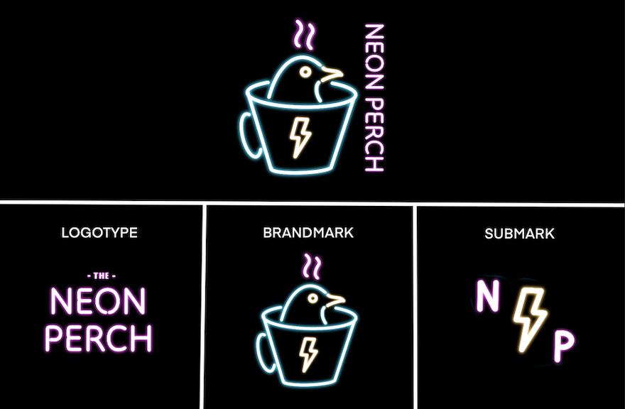
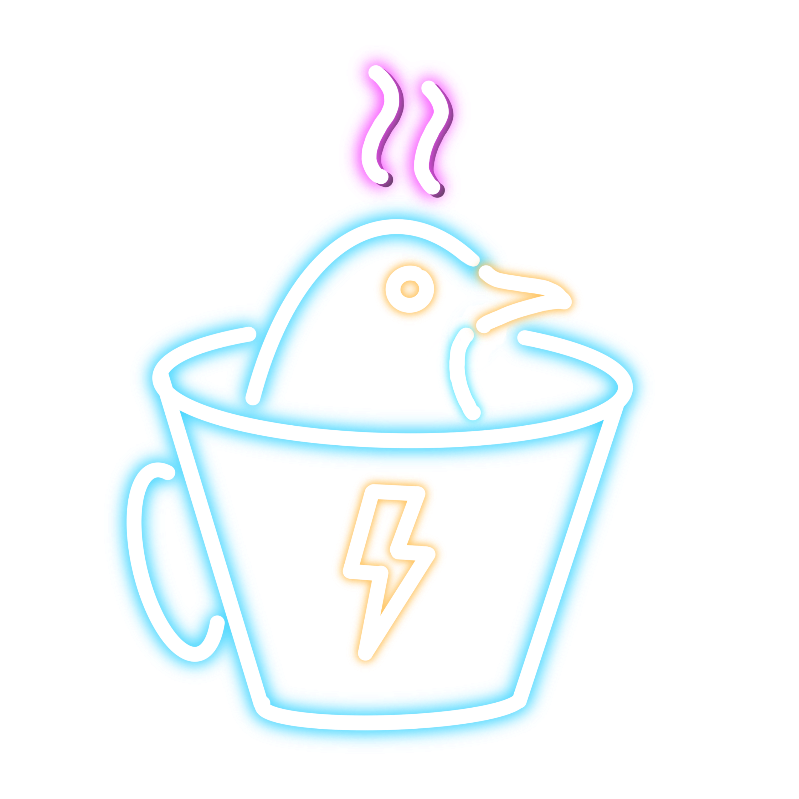
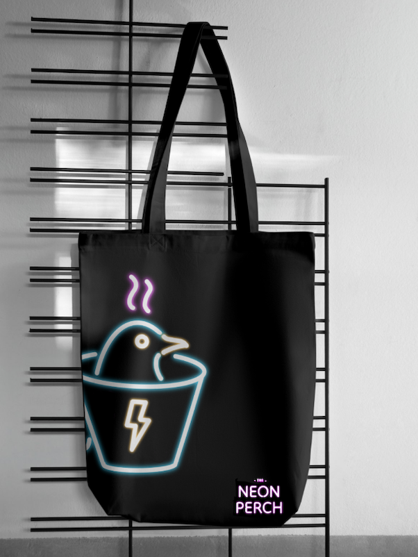
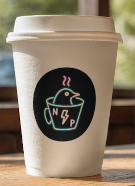
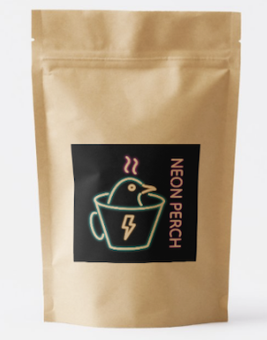
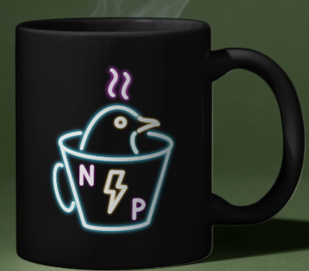
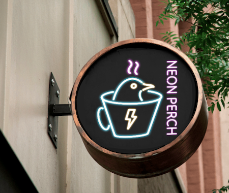

A high-energy, late-night espresso bar in a bustling downtown arts district. While most coffee shops lean cosy and earthy, Neon Perch goes electric. The brief: retro-futurism meets tropical noir — 80s Miami vibes, modernised for a clean, premium feel.

A minimalist icon built to work as a social media avatar, a UV-reactive cup stamp, and a glowing neon sign. Shown across dark and mid backgrounds to demonstrate range.

On NavyDeep navy and charcoal as the canvas, with electric cyan, hot pink, and cyber lime as jolts of energy — colours that pop under UV light and glow in a dark room.
A bold, condensed all-caps display font for high-impact signage and headlines, paired with a clean geometric sans-serif for menus, labels, and body copy.
Lightning Brew
Condensed Display — bold, geometric, all-capsABCDEFGHIJKLMNOPQRSTUVWXYZ
Served glowing under UV light.
Geometric Sans-Serif Light — clean, spacious, preciseAa Bb Cc Dd Ee — 0123456789
The signature Lightning Brew is served in a UV-reactive glass — so the brand collateral had to hold its own in the dark. Cup sleeves, late-night menus, and social assets all lean into the electric palette.




